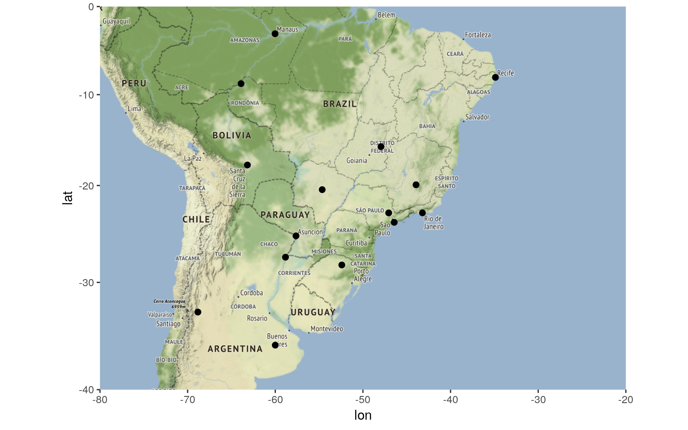
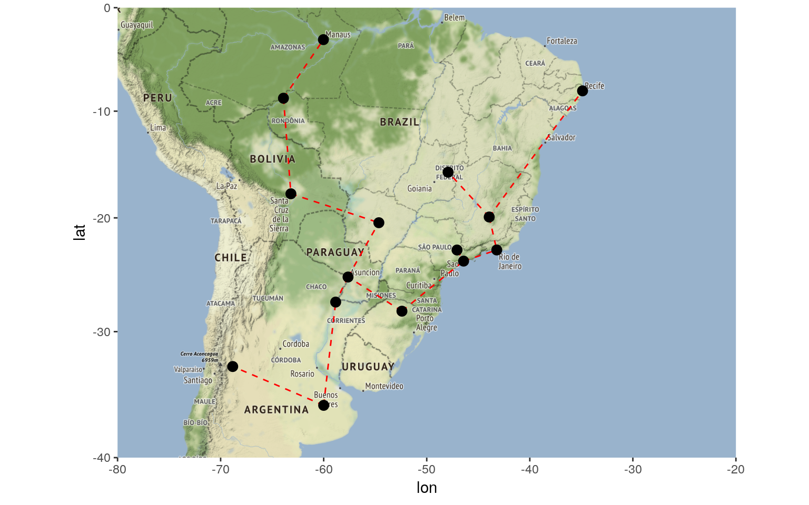
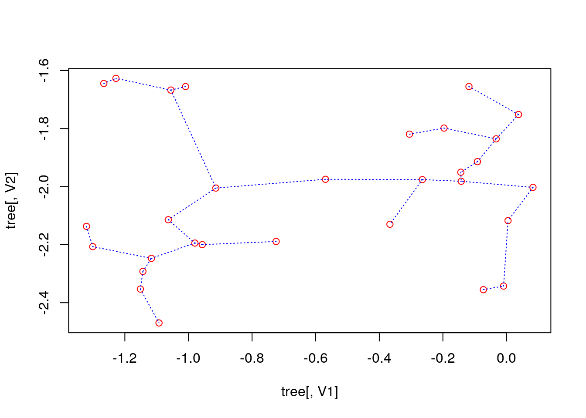
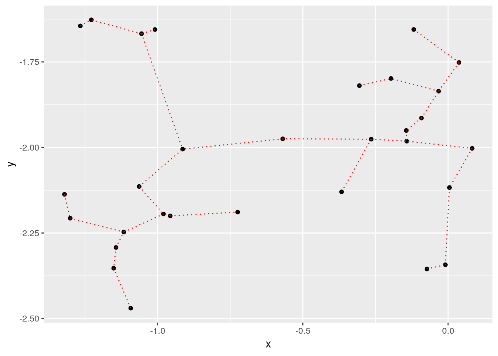
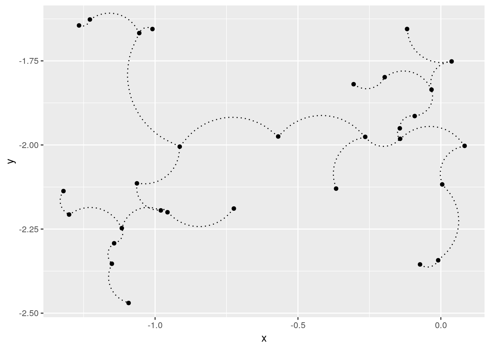
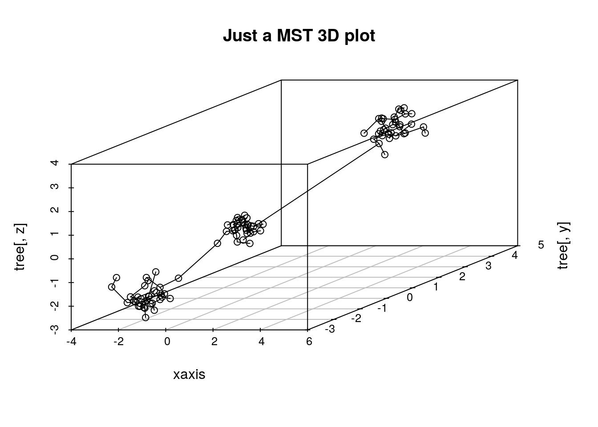

An R package for Fast Computing Euclidean Minimum Spanning Trees. Originally posted on https://allanvc.github.io
I am proud to announce emstreeR - my first R package that is available on CRAN since December 3rd, 2018.
emstreeR is a package for fast and easily computing Euclidean Minimum Spanning Trees (EMST). It heavily relies on RcppMLPACK and Rcpp to work as wrapper to the EMST Dual-Tree Boruvka algorithm (March, Ram, Gray, 2010) implemented in ‘mlpack’ - the C++ Machine Learning library (Curtin, 2005). With ‘emstreeR’, R users have access to the C++ fast EMST algorithm without having to deal with the R-Rcpp-C++ integration. The package also provides functions and an S3 method for readily plotting the Minimum Spanning Trees (MST) using either ‘base’, ‘scatterplot3d’ or ‘ggplot2’ style.
Working with ‘emstreeR’ is easy because you just have to pass a matrix or data.frame of points as an argument to the main function computeMST() in order to get things working.
But, before we begin, what exactly is a Minimum Spanning Tree?
I will try to explain that without bringing any graph concept to the discussion.
Imagine you have to connect a group of South American cities with pipelines in order to distribute the natural gas extracted from an offshore platform on the coast of Rio de Janeiro. To optimize your operations, you need to know the most efficient route, e.g. the route that connects all the cities within the minimum distance possible. That optimal route between the cities is a Minimum Spanning Tree. Therefore, the MST problem is, in its essence, an optimization problem.
The distances between the points can be calculated using various methods, such as Manhattan, Euclidean, Minkowski, etc. ‘emstreeR’ uses Euclidean distances. Hence, the name Euclidean Minimum Spanning Trees.
So, let’s try to reproduce the aforementioned example.
First, we are going to use the package ‘ggmap’. We will pass the cities names as arguments and then get their latitude and longitude coordinates, using the Data Science Toolkit repository (source = "dsk").
library(ggmap)
## cities:
cities_location <- data.frame(location = c("Passo Fundo, Brazil",
"Buenos Aires, Argentina",
"Assuncion, Paraguay",
"Campinas, Brazil",
"Cubatao, Brazil",
"Mendoza, Argentina",
"Corrientes, Argentina",
"Porto Velho, Brazil",
"Manaus, Brazil",
"Santa Cruz de La Sierra, Bolivia",
"Belo Horizonte, Brazil",
"Brasília, Brazil",
"Rio de Janeiro, Brazil",
"Campo Grande, Brazil",
"Recife, Brazil"
),
stringsAsFactors = FALSE)
## get latitude and longitude
geo_location <- geocode(cities_location$location, source = "dsk")
## combine data:
df_location <- cbind(cities_location, geo_location)Let’s plot the map, so we can have an initial notion about what we are dealing with.
# coordinates for South America
map_grid <- c(left = -80, bottom = -40, right = -20, top = 0)
library(dplyr) # we wanna use pipes
get_stamenmap(map_grid, zoom = 5) %>% ggmap()+
geom_point(data = df_location,
aes(x = lon, y = lat), size=2)
Now is when emstreeR comes in handy. We pass the point columns as the argument to computeMST() and it calculates the minimum route connecting all the points, e.g. the Euclidean minimum spanning tree.
## MST:
library(emstreeR)
out <- ComputeMST(df_location[,2:3])
9 edges found so far.
210 cumulative base cases.
0 cumulative node combinations scored.
12 edges found so far.
394 cumulative base cases.
0 cumulative node combinations scored.
14 edges found so far.
542 cumulative base cases.
0 cumulative node combinations scored.
Total spanning tree length: 10.012
out
lon lat from to distance
1 -52.40667 -28.26278 4 5 0.1275521
2 -60.00000 -36.00000 3 7 0.2702386
3 -57.63591 -25.30066 11 13 0.3350650
4 -47.06083 -22.90556 5 13 0.3591768
5 -46.42528 -23.89500 3 14 0.6189752
6 -68.82717 -32.89084 11 12 0.6207409
7 -58.83410 -27.48060 1 3 0.6437908
8 -63.90389 -8.76194 8 9 0.7437005
9 -60.02500 -3.10194 1 5 0.7956373
10 -63.18117 -17.78629 2 7 0.9394038
11 -43.93778 -19.92083 10 14 0.9534939
12 -47.92972 -15.77972 8 10 0.9893601
13 -43.20750 -22.90278 2 6 0.9989068
14 -54.64639 -20.44278 11 15 1.6159137
15 -34.88111 -8.05389 1 1 0.0000000As a result, we have a data.frame containing our original data and three more columns: from, to, and distance. This information is the Minimum Spanning Tree and will be used for plotting.
You can silence the output of the algorithm by setting verbose=FALSE in computeMST().
To better visualize the result, we plot the map again, but now using the ggplot2’s extension provided in ‘emstreeR’: stat_MST().
## Plot:
# we use the same grid map
get_stamenmap(map_grid, zoom = 5) %>% ggmap()+
stat_MST(data = out,
aes(x = lon, y = lat, from=from, to=to),
colour="red", linetype = 2)+
geom_point(data = out, aes(x = lon, y = lat), size=3)
Once you have the information about the minimum route, it is easy to see that you will have to install gas distribution hubs in cities that will have more than two leaving or arriving links, such as Assuncion in Paraguay. Based on that information or other criteria such as connectivity or even by cutting the largest edge, you can also define or separate regions of operations. What I mean by this is that you can also use Minimum Spanning Trees in clustering problems. Nonetheless, let’s save that topic for another post.
Below, I will present other things you can do with ‘emstreeR’.
‘emstreeR’ provides an S3 method for the ‘base’ function plot(). It is easy to make simple 2D plots with that.
## artifical data for 2D plots:
set.seed(1984)
n <- 15
c1 <- data.frame(x = rnorm(n,-0.2, sd=0.2), y = rnorm(n,-2,sd=0.2))
c2 <- data.frame(x = rnorm(n,-1.1, sd=0.15), y = rnorm(n,-2,sd=0.3))
d <- rbind(c1, c2)
d <- as.data.frame(d)
## MST:
#library(emstreeR)
out <- ComputeMST(d, verbose = FALSE)
## simple 2D plot:
plot(out, col.pts = "red", col.segts = "blue")
The stat_MST() extension also makes it easy plotting 2D plots, but in ggplot2 style:
## 2D plot with ggplot2:
library(ggplot2)
ggplot(data = out, aes(x = x, y = y, from = from, to = to))+
geom_point()+
stat_MST(colour="red")
If you want something fancier, you can use the geom=curve argument:
## 2D plot with ggplot2:
#library(ggplot2)
ggplot(data = out, aes(x = x, y = y, from=from, to=to))+
geom_point()+
stat_MST(geom="curve")
You can also make 3D MST plots with ‘emstreeR’. It provides a wrapper for plotting 3D scatter plots, using the ‘scatterplot3d’ package.
Let’s create 3D artificial data and compute the MST.
## artificial data for 3D plots:
n = 99
set.seed(1984)
d1<-matrix(rnorm(n,mean=-2,sd=.5), n/3, 3) # 3d
d2<-matrix(rnorm(n,mean=0,sd=.3), n/3, 3)
d3<-matrix(rnorm(n,mean=3,sd=.4), n/3, 3)
d<-rbind(d1,d2,d3) # just to show a matrix input
## MST:
library(emstreeR)
out <- ComputeMST(d, verbose = FALSE)We can do a simple 3D plot using the function plotMST3D().
## simple 3D plot:
plotMST3D(out, xlab = "xaxis", main="Just a MST 3D plot")
But, again, if you like fancier plots, we can also make an interactive 3D MST plot using ‘plotly’:
# some adjusts needed
ord_id <- Reduce(rbind, rbind(t(out[, c("from", "to")]), NA))
ord_data <- out[ord_id, c("X1", "X2", "X3")]
ord_data <- as.data.frame(ord_data)
library(dplyr) # we wanna use pipes
library(plotly)
plot_ly(showlegend = T) %>%
add_markers(data=ord_data, x = ~X1, y = ~X2, z = ~X3,
marker=list(opacity=0.5), size = I(3.5), name="points") %>%
add_paths(data=ord_data, x = ~X1, y = ~X2, z = ~X3,
color = I("red"), name="edges")And that’s it! I hope you enjoy emstreeR.
Curtin, R. R. et al. (2005). Mlpack: A scalable C++ machine learning library. , v. 14, 2013. doi:10.1145/1835804.1835882.
March, W. B., and Ram, P., and Gray, A. G. (2010). . 16th ACM SIGKDD International Conference on Knowledge Discovery and Data mining, July 25-28 2010. Washington, DC, USA. doi:10.21105/joss.00726.
Text and figures are licensed under Creative Commons Attribution CC BY 4.0. The figures that have been reused from other sources don't fall under this license and can be recognized by a note in their caption: "Figure from ...".